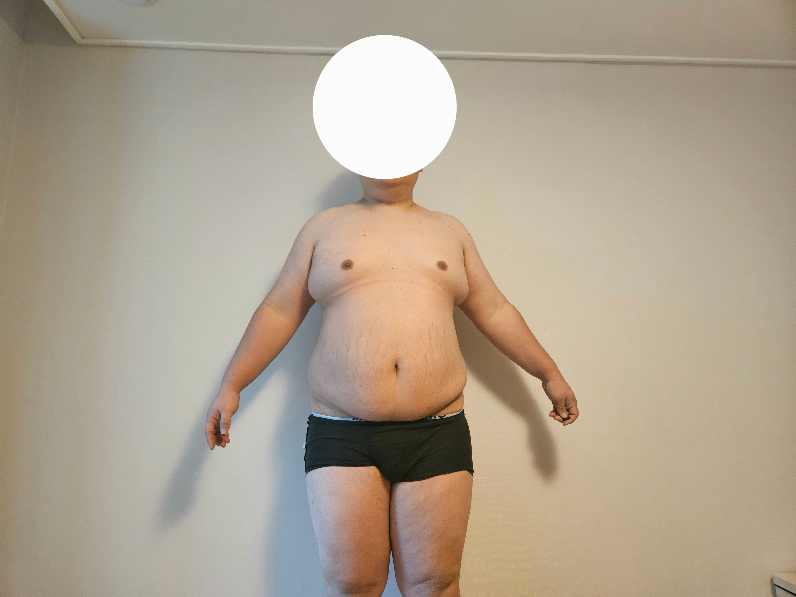

176에서 95까지 11개월 걸렸다
맞고 인간다운 삶을 누리는게 맞다
176때 식비의 1/4도 안드는 가격이다
빨리 탈출해라

176에서 95까지 11개월 걸렸다
맞고 인간다운 삶을 누리는게 맞다
176때 식비의 1/4도 안드는 가격이다
빨리 탈출해라

용량 얼마까지 맞았냐
176이 키가 아니라 무게라고?
빛폭탄 맞으면 죽었겠네 ㄷㄷ
ㅋㅋㅋㅋㅋㅋ
나도 초고도비만이었고 주사 고려 해봤는데
죽을때까지 맞아야 한대서 돈때매 포기 했거든
위절제술 하고 많이 빠졌고 빠지고 있어서
진짜 뚱땡이들은 위 자르는거 추천함
비가역적이잖아... 주사로 해 주사로
주사는 단약시 반드시 요요가 옴
아구창 의사피셜도 있고
그게 요즘 정설임
난 돈 없어
약은 뚱땡이 기준 최고용량인데 50만원이 넘어감
연 600에 육박함
수술은 300정도 썼고 영구지속임
난 돈없어..
인생에서 젤 잘한게 수술 한거고
젤 후회되는게 4개월 위고비 한거임
평상시 한달식비가 60이먼 마운자로 40 식비 20된다 나가는 돈은 똑같음 생각해보면 아까울것도 없는가격
체중도 유지하고 사람답게 살수있어서 좋은약임
수술도 사람답게 살 수 있어
마운자로는 40 아니야 60가까이돼
내 기준에선 수술이 싸게 먹혔고 평생 한다는게 걸림돌이라서 한번에 끝냈음
1년기준이래도 두배 가까이 차이나는데 난 그돈모은단 생각으로 한 것도 있음
지금 식비는 많이 써야 월 30이고 주사유지비는 안나가니까 굉장히 만족중
어느 정도는 미래에 가격 싸질 거 생각해서 평생 맞을 각오 있을 걸 추후 경구약으로 대체해도 괜찮고
근데 아구창의사는 수술했는디 다시도루묵이라 마운자로도 했다고함
마운자로도 끊으면 도루묵이니 평생 맞아야겠지
맞아 그말도 하더라 혈압약마낭 평생먹어야한대
인간승리네 대단하다
너무 비싸..
구문소 갔다왔구나
176이 키가아니라 무게였구나 ㅋㅋㅋㅋ
진짜 새삶을 얻엇네 ㅋㅋ
고도비만 이상은 어떠한 약 부작용보다 그냥 비만 유지하는게 더 안좋음
빨리 맞는게 무조건 좋음
약혐 안붙이냐?
마즈피플 지구인들과 친해지고 싶다~
대단하다.
식비가 얼마인거여
나두 식비가 한달 25만원 정도 줄어들어서 약값이 크긴 한데 식비 절감분 계산하면 좀 감안이 되는거 같음
시발련아
제목에 혐 왜 없냐?
미친새낀가 진짜
그래그래... 성취감은 알겠는데
왜 안구테러질이냐?
와 나메코세요???
사람 살렸네 건강하자
왜 빼고나선 옷입음
튼살 아직 있냐
대단하네